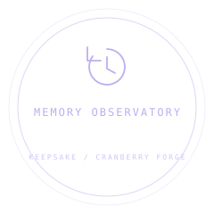

INDEPENDENT TOOLSave migration
Keepsake
Progress deserves a future.
An older save. A newer world. Bring the memories along.
MIT LICENSEv0.1.0MODULAR BY DESIGN

THE DATA BEHIND THE SCENE
What changed?
Each migration receives an isolated copy. Every schema version is validated. Restore only becomes available after the entire chain succeeds; rejected saves leave the active world intact.
| JSON path | Before | After |
|---|
USE IT IN YOUR GAME
const result = migrateSave(oldSave, config);
if (result.ok) {
// Your game owns applying and storing the candidate.
restoreWorld(result.save.payload);
}Live JSON output
FROM SHOWCASE TO YOUR PROJECT
Take the good parts with you.
Preview migrations, validate every step, and apply a candidate only after the complete chain succeeds.
Download the archive, then install locally.
npm install ./cranberry-forge-keepsake-0.1.0.tgz